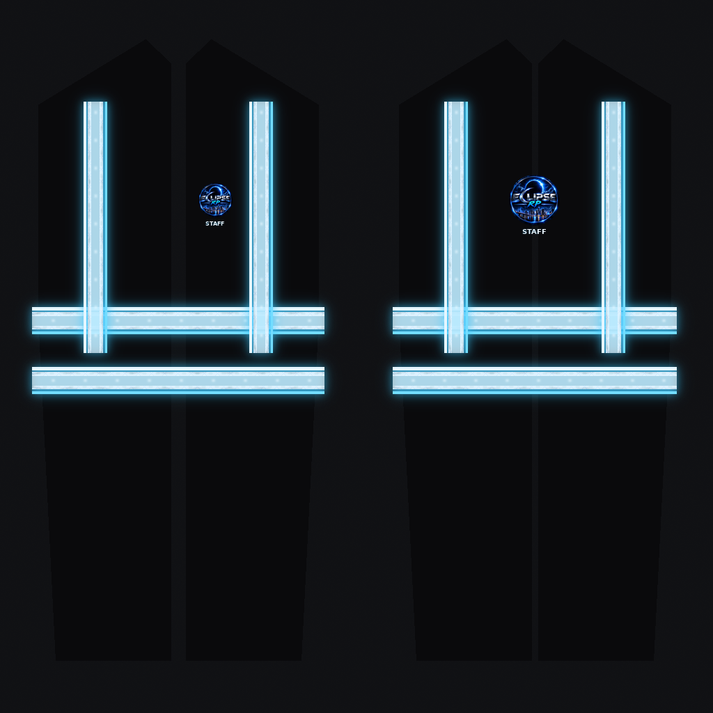

FiveM · YTD Demo · Eclipse RP
STAFF VEST
Bekijk de mockup, de gestreamde texture (uit .ytd gehaald), reflectoren-closeup, logo’s en specular map.
1. Originele mockup

2. Uit YTD geëxtraheerd

3. Reflectoren close-up

4. Specular map (glans)

 vest_diffuse_1024.png
vest_diffuse_1024.png staff_text.png
staff_text.png reflector_tile.png
reflector_tile.png